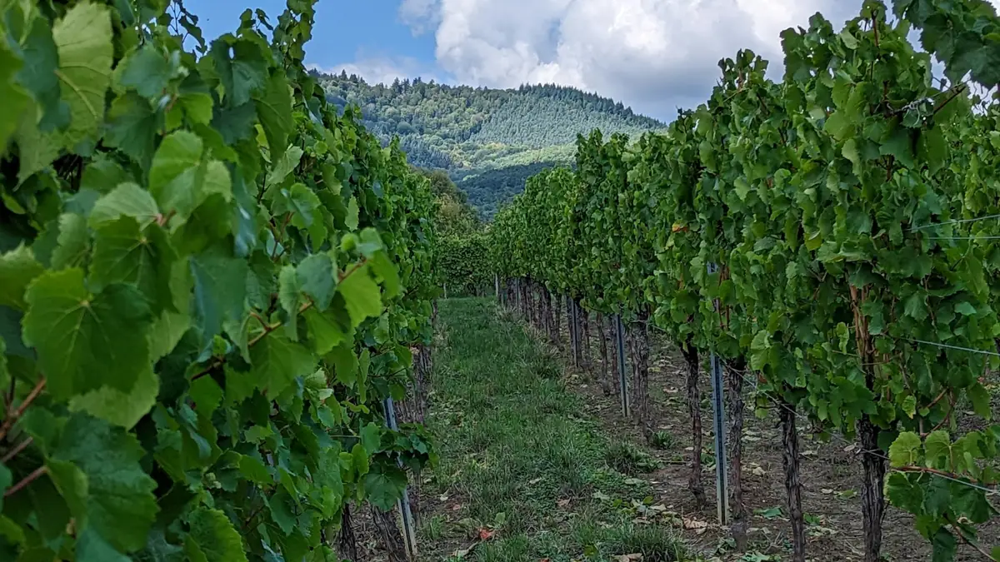

Home › Wine stories › Phylloxera: the Tiny Louse That Nearly Killed European Wine
Phylloxera: the Tiny Louse That Nearly Killed European Wine

Photo: Dietmar Ludmann on Unsplash
In the 1860s an American root aphid began killing France's vines; within decades it had wiped out most of Europe's vineyards, and the cure changed how almost every vine is grown.
In the mid-1860s growers in the southern Rhône, between Avignon and Orange, noticed something odd. Patches of vines turned yellow, weakened and died, and the dead patches spread outwards year after year. There was no obvious culprit on the leaves or the grapes. The killer was underground: a pale aphid, barely visible to the naked eye, feeding on the roots.
In 1868 a commission led by the Montpellier botanist Jules-Émile Planchon dug up dying vines and found their roots crawling with the insects. Planchon gave it a fittingly grim name, Phylloxera vastatrix, 'the devastator'. Comparing notes with Charles Valentine Riley, the state entomologist of Missouri, he concluded that the pest was American, almost certainly carried across the Atlantic on American vines that French growers had imported for planting trials. American vines had evolved alongside the louse and shrugged it off; Europe's Vitis vinifera had no defence at all.
What followed was a slow-motion catastrophe. The louse reached Burgundy by 1878 and Champagne by 1890, and it crossed borders into Portugal, Germany, Spain, Italy and beyond. By the end of the century roughly two-thirds of Europe's vineyards had been destroyed. French production fell from an average of about 57 million hectolitres a year in 1863–75 to around 31 million in 1879–92, and thousands of ruined growers left for Algeria or Chile.
The search for a cure was desperate. The French government offered a prize of 300,000 gold francs for a practical remedy, and it was never claimed. Growers flooded their vineyards for weeks at a time, injected poisonous carbon disulphide into the soil, or tried folk cures involving garlic and urine. Chemicals helped only the richest estates, and planting American vines directly gave wines with a 'foxy' flavour that drinkers disliked.
The answer, championed by Planchon, was grafting: joining a European vine onto resistant American roots, so the fruit stays vinifera while the louse meets a root it cannot harm. The difficulty was soil. Early rootstocks sulked in the chalk of Cognac and Champagne, so in 1887 the French government sent the young viticulturist Pierre Viala to the United States. In Texas he found Vitis berlandieri, a wild vine thriving on limestone, and its hybrids gave rootstocks still planted today. The Texan nurseryman Thomas Volney Munson of Denison sent resistant stock to France and was honoured by the French state in 1888. By 1900 about two-thirds of French vines stood on American roots.
Replanting brought its own chaos: gluts, collapsing prices and widespread fraud. France's response, beginning with a law against wine fraud in 1905, helped pave the way to the appellation system that still governs French wine labels.
There is still no cure, so nearly every vineyard in Europe grows on American rootstock. A few places escaped: Chile, the volcanic island of Santorini and much of South Australia still grow vines on their own roots, as do Bollinger's tiny plots of ungrafted Pinot Noir in Champagne. To taste the difference, try a Santorini Assyrtiko or an old-vine Barossa Shiraz, both from ungrafted vines, and decide for yourself whether experts are right that own-rooted vines have something special.
Related grapes and regions
Grapes
Regions
Sources
- Phylloxera – Encyclopedia.com
- The Root of all Evil – An in-depth look at Phylloxera – Decanter
- Phylloxera Vastatrix – GuildSomm
- 1887: a viticultural mission to America to save French vineyards – INRAE
- T.V. Munson – Grayson College Viticulture and Enology Center
The Wine Reference newsletter
New wines, stories and career guides, one email a week at most.
Over 18s only. Unsubscribe any time with one click. Your email is stored securely by Kit and never shared.
Support The Wine Reference
This guide is free, with no paywall. If it helped you choose a bottle, you can buy me a glass and keep it growing.
🍷 Buy me a glass